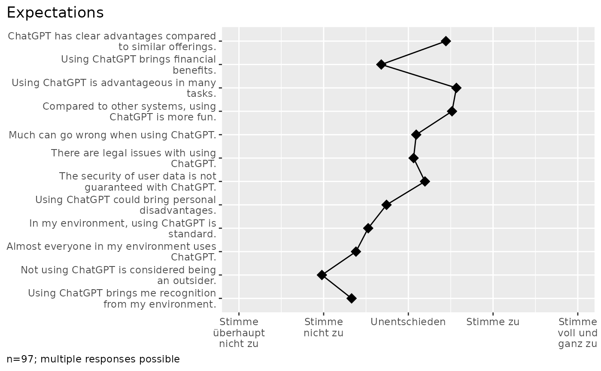

![[Experimental]](figures/lifecycle-experimental.svg)
Arguments
- data
A tibble containing the dataset.
- codes
A tibble in codebook format.
- cols
A tidy column selection. Set to NULL (default) to apply to all columns found in the codebook. Restricting the columns is helpful when you want to set value labels. In this case, provide a tibble with value_name and value_label columns and specify the columns that should be modified.
- items
If TRUE, column labels will be retrieved from the codes (the default). If FALSE, no column labels will be changed. Alternatively, a named list of column names with their labels.
- values
If TRUE, value labels will be retrieved from the codes (default). If FALSE, no value labels will be changed. Alternatively, a named list of value names with their labels. In this case, use the cols-Parameter to define which columns should be changed.
Details
You can either provide a data frame in codebook format to the codes-parameter or provide named lists to the items- or values-parameter.
When working with a codebook in the codes-parameter:
Change column labels by providing the columns item_name and item_label in the codebook. Set the items-parameter to TRUE (the default setting).
Change value labels by providing the columns value_name and value_label in the codebook. To tell which columns should be changed, you can either use the item_name column in the codebook or use the cols-parameter. For factor values, the levels and their order are retrieved from the value_label column. For coded values, labels are retrieved from both the columns value_name and value_label.
When working with lists in the items- or values-parameter:
Change column labels by providing a named list to the items-parameter. The list contains labels named by the columns. Set the parameters codes and cols to NULL (their default value).
Change value labels by providing a named list to the values-parameter. The list contains labels named by the values. Provide the column selection in the cols-parameter. Set the codes-parameter to NULL (its default value).
Examples
library(volker)
# Set column labels using the items-parameter
volker::chatgpt %>%
labs_apply(
items = list(
"cg_adoption_advantage_01" = "Allgemeine Vorteile",
"cg_adoption_advantage_02" = "Finanzielle Vorteile",
"cg_adoption_advantage_03" = "Vorteile bei der Arbeit",
"cg_adoption_advantage_04" = "Macht mehr Spaß"
)
) %>%
tab_metrics(starts_with("cg_adoption_advantage_"))
#>
#>
#> |Item | min| q1| median| q3| max| mean| sd| n|
#> |:-----------------------|---:|--:|------:|--:|---:|----:|---:|--:|
#> |Allgemeine Vorteile | 1| 3| 4| 4| 5| 3.5| 1.0| 99|
#> |Finanzielle Vorteile | 1| 2| 3| 4| 5| 2.7| 1.2| 99|
#> |Vorteile bei der Arbeit | 1| 3| 4| 4| 5| 3.6| 1.1| 99|
#> |Macht mehr Spaß | 1| 3| 4| 4| 5| 3.5| 1.0| 99|
#>
#> 2 missing case(s) omitted.
#>
# Set value labels using the values-parameter
volker::chatgpt %>%
labs_apply(
cols=starts_with("cg_adoption"),
values = list(
"1" = "Stimme überhaupt nicht zu",
"2" = "Stimme nicht zu",
"3" = "Unentschieden",
"4" = "Stimme zu",
"5" = "Stimme voll und ganz zu"
)
) %>%
plot_metrics(starts_with("cg_adoption"))

#> In the plot, 4 missing case(s) omitted.